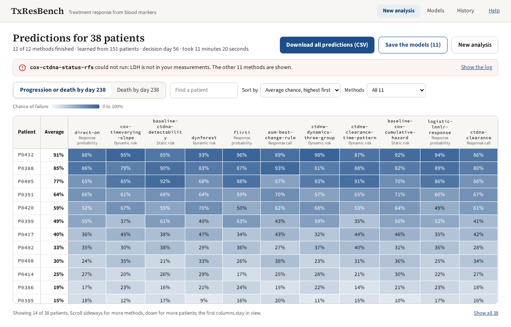
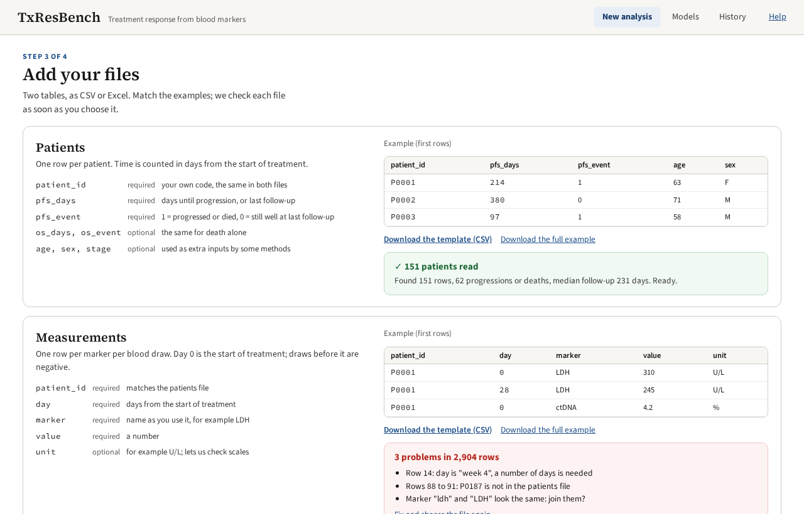
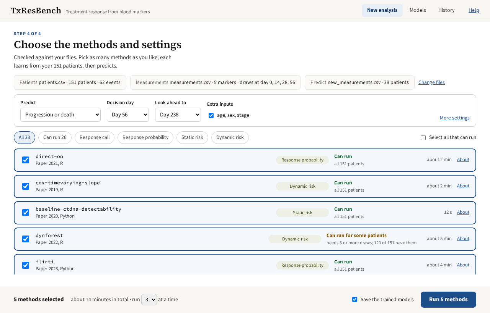
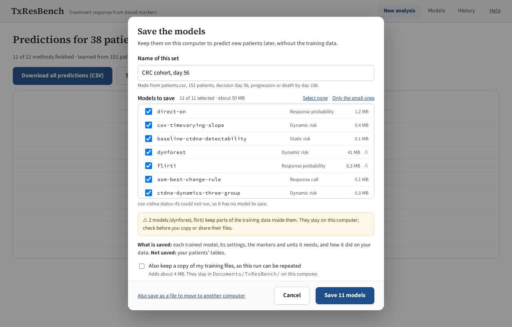

Predict treatment response from blood markers
Run the methods of the TxResBench benchmark on your patients' serial measurements, and compare their predictions.

See it



What you can do
Use a pretrained model
Add new patients, pick models, get predictions.
Learn from your data
Train many methods on your patients and compare them.
Reuse saved models
Predict new patients without the training data.
Methods included
Published methods, each run unchanged in its own environment.
Download
Version {{product.version}}
Needs {{system.memory_gb}} GB memory and about {{system.disk_gb}} GB of disk. Release notes · All releases
Privacy
No account, no tracking
No sign-in and no usage reports.
Little network use
Only to fetch methods and models, and check for updates.
Source available
Read the code to see what it does.
For research. Predictions are not for deciding a patient's treatment.